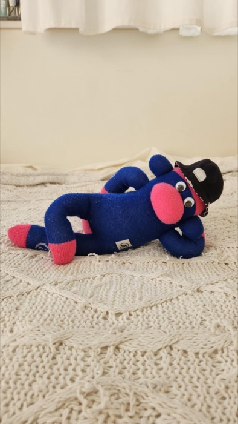
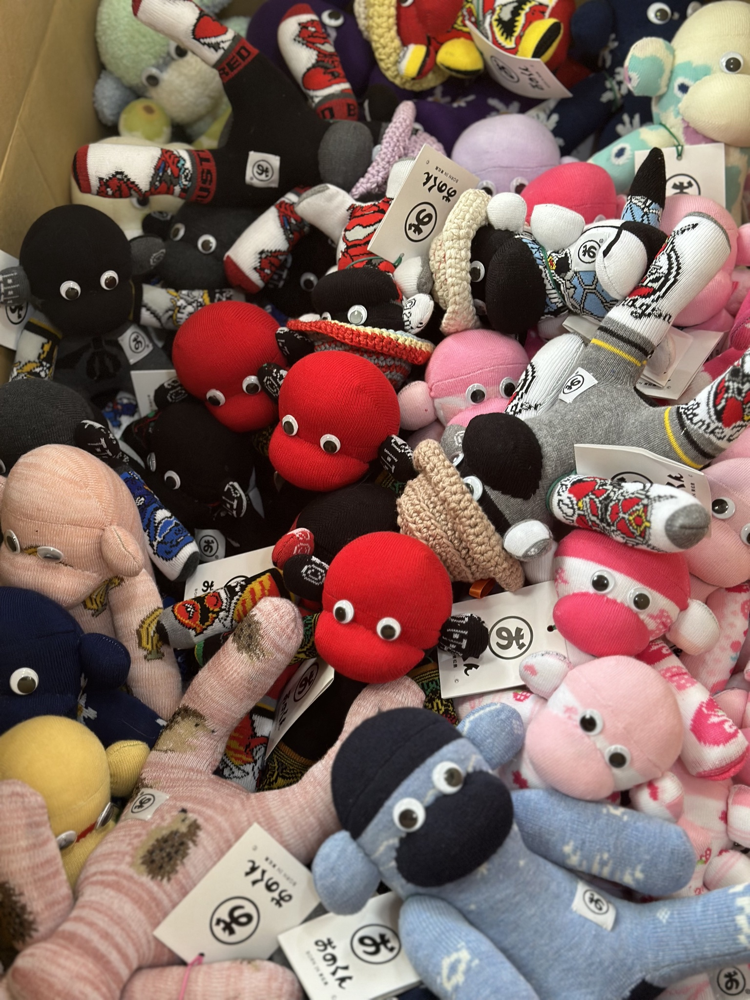

写真投稿
迎えた後の写真投稿は、里親さん同士のつながりを広げる入口になります。
里親募集
おのくんは「買う」ではなく、家族として迎える存在です。
空の駅でおのくんに会い、ひとつひとつ表情の違う子たちの中から「この子だ」と感じる出会いを大切にします。
東松島まで来られない日も、公式SHOPからおのくんの世界にふれ、活動を応援できます。

迎えた後の写真投稿は、里親さん同士のつながりを広げる入口になります。

全国・海外に広がる里親さんの輪を紹介します。
空の駅は、迎えた後も「ただいま」と帰ってこられる場所です。